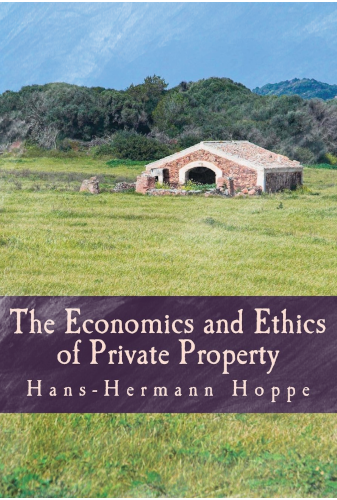

A Economia e a Ética da Propriedade Privada
Seguindo a tradição austríaca de Murray Rothbard, Hoppe analisou o comportamento do governo, usando recursos da teoria da Escola Austríaca. Definindo governo como o detentor do monopólio de jurisdição e taxação em dado território, e supondo não mais do que o próprio interesse dos funcionários do governo, predisse que eles usariam os privilégios do monopólio para maximizar sua própria riqueza e poder. Hoppe argumenta que há alto grau de correlação entre essas previsões teóricas e dados históricos.
Segundo a teoria de Hoppe, um monopólio não depende da participação no mercado, seja ela qual for. O monopólio se faz pelo bloqueio da entrada nos diferentes setores da economia. Dessa forma, monopólios não podem surgir no livre mercado, mas sempre resultam de políticas governamentais. Monopólios são um mal do ponto de vista dos consumidores porque os preços tendem a aumentar e a qualidade cai, ao contrário do que aconteceria em mercados completamente livres de coerção. Como Rothbard, Hoppe tem conjecturado que em um livre mercado, a competição privada faria com que as agências de defesa provessem melhor qualidade de proteção e resolução de conflitos do que existe atualmente, sob monopólio governamental
Faça o Download da obra completa Aqui